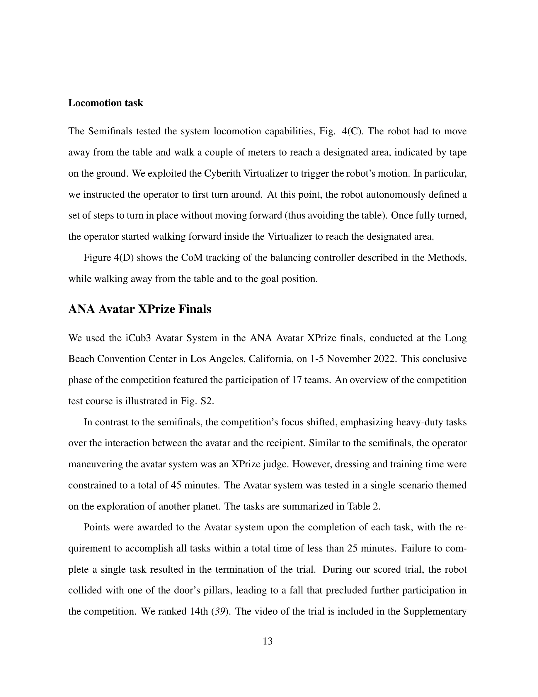

저자: Stefano Dafarra, Ugo Pattacini, Giulio Romualdi, Lorenzo Rapetti, Riccardo Grieco, Kourosh Darvish, Gianluca Milani, Enrico Valli, Ines Sorrentino, Paolo Maria Viceconte, Alessandro Scalzo, Silvio Traversaro, Carlotta Sartore, Mohamed Elobaid, Nuno Guedelha, Connor Herron, Alexander Leonessa, Francesco Draicchio, Giorgio Metta, Marco Maggiali, Daniele Pucci | 날짜: 2022-03-14 | URL: https://arxiv.org/abs/2203.06972
원격 위치에서 휴머노이드 로봇 iCub3을 구현화(embodiment)하는 완전한 아바타 시스템을 제시하며, 수백 km 떨어진 위치에서의 이동, 조작, 음성, 표정 제어와 시각, 청각, 촉각, 무게감 피드백을 통합한다.

Figure 4(D) shows the CoM tracking of the balancing controller described in the Methods,
총평: 본 논문은 휴머노이드 아바타의 완전한 신체 제어와 다중 감각 피드백을 통합하여 원격 현존감을 실현한 획기적인 시스템을 제시하며, 실제 환경에서의 대규모 검증을 통해 그 실용성을 입증했다. 네트워크 지연 처리와 embodiment 평가의 정량화 측면에서 개선의 여지가 있으나, 전체적으로 로보틱스와 텔레현존 분야에 중요한 기여를 한다.